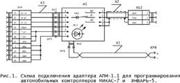
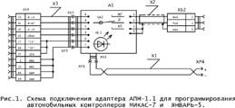

http://2a2.ru/
| тел. +7 927 800 76 16 http://2a2.ru/ |
|---|
АДАПТЕР АПМ-1.1 (K-line/RS-232)Для просмотра увеличенного изображения, кликните по фотографии прибора. Увеличенное изображение откроется в новом окне. 
 
Инжекторные автомобили и диагностические средства к ним уже давно не новость, как для автомеханика малого СТО, так и для рядового автовладельца. Привычными для всех стали также такие термины, как: «диагностика», «тестирование», «адаптация», «чип-тюнинг». Развитие диагностических средств идет по двум основным направлениям: диагностические сканеры-тестеры и компьютерные программы диагностики. Сканеры-тестеры более компактны, не требуют дополнительного сетевого питания и практически готовы к работе сразу же после подключения, но малоинформативны, так как имеют ограниченный размер экрана и малый объем памяти для оперативного хранения информации. Компьютерные программы обладают хорошей информативностью, так как имеют большой экран и графический вывод информации, возможность подключения информационных баз данных и запуска автоматических диагностических тестов, но значительно менее компакты, чем сканеры-тестеры, требуют сетевого питания (преобразователя) и имеют время готовности к работе 2—3 минуты для загрузки операционной системы и прикладных программ. Они менее устойчивы к помехам бортовой сети. Основное достоинство компьютеров—это возможность использования широкого спектра сервисных программ от диагностики до чип-тюнинга. В настоящее время в сети «Интернет» на сайтах предприятий и частных лиц, специализирующихся в области автомобильной электроники и автомобильного бизнеса, размещено большое число программного обеспечения для автосервиса, которое можно скопировать бесплатно. Можно перечислить некоторые из них:
Вышеуказанное программное обеспечение хотя и имеет свои недостатки, но, в целом, работоспособно. Но само по себе это программное обеспечение не функционирует без адаптеров связи, диагностических и переходных кабелей, которые необходимо подключать к компьютеру и к бортовой диагностической цепи автомобиля. Для этих целей и был создан универсальный адаптер АПМ-1.1. Он имеет встроенную защиту K-line от перенапряжения, а также от коротких замыканий на массу или напряжение бортсети. Базовый адаптер имеет малогабаритный корпус 20х60х84мм, тумблер режимов «Программирование—работа», штекер для внешнего источника 12 В и кабель (1,5м) для подсоединения к Com-порту компьютера. Адаптер АПМ-1.1 по конструктивному исполнению является универсальным. В зависимости от целевого назначения к внешнему соединителю адаптера можно подключать:
В базовый комплект АПМ-1.1 входит прибор АПМ-1.1 и паспорт. Дополнительно к базовому комплекту можно заказать кабели диагностические ГАЗ-1, ГАЗ-2, ВАЗ-1 (euro-0/2), ВАЗ-2 (euro-3/4), кабель программатора контроллеров МИКАС-7 и ЯНВАРЬ-5, кабель программатора контроллеров ЯНВАРЬ-7.2 и Bosch M7.9.7, удлинитель COM-порта 5 метров, перемычку АПС, щуп сигнальный для программирования автомобильных контроллеров Bosch M7.9.7, сумку рабочую. Руководство по эксплуатации и паспорт на АПМ-1.1 в формате *.pdf можно взять здесь. На странице price.html приведены цены на продукцию ООО «А2». Заказ прибора АПМ-1.1 |
•главная •где купить •цены •продукция •документация •программы •коды ГАЗ •ЭСУД ГАЗ •ЭСУД PATRIOT •ЭСУД ВАЗ •ЭСУД STEYR •автосервисы •сайты e-mail: •a2@2a2.ru |